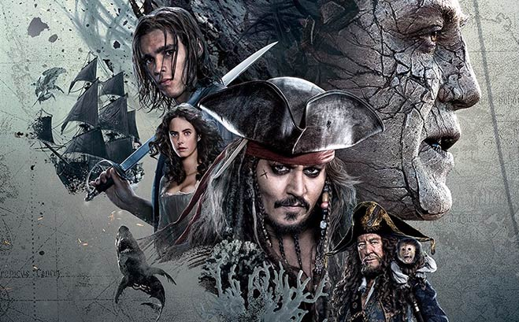
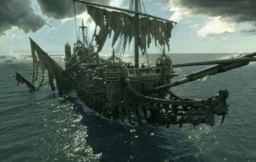
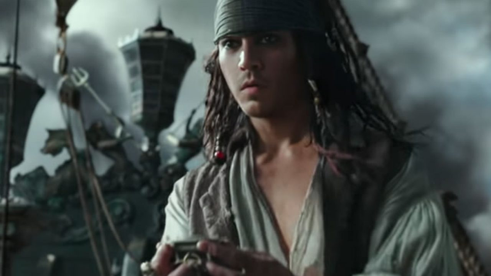

Esta es la quinta entrega de la saga de películas de Piratas del Caribe, protagonizada igualmente por Johnny Depp como el capitán Jack Sparrow.
En esta ocasión nos cuentan el regreso del capitán Armando Salazar y su tripulación, navegante español, cuyo objetivo era exterminar con todos los piratas, pero que fue derrotado por Jack cuando este todavía era joven. Esta vez vuelven como espectros que no pueden tocar tierra firme, por lo que su objetivo es conseguir el tridente del dios Poseidón para volver a ser humanos y acabar con todos los piratas sobre la faz de la tierra.
La película se estrenó el 26 de Mayo de 2017 tanto en España como en Estados Unidos y fue dirigida por Joachim Rønning y Espen Sandberg. Los actores se repiten de las antiguas entregas pero se añaden otros como Javier Bardem haciendo del capitán Salazar.
Esta entrega tiene alguna peculiaridad como ser la primera en no se grabada en las aguas del Caribe o que su título original era: "Dead Man Tell No Tales" (Los hombre muertos no cuentan historias), haciendo referencia a un comentario de uno de los personajes de la primera película.
Los 2 directores de la pelicula, ya mencionados anteriormente son Joachim Rønning y Espen Sandberg. Ambos son directores de cine nacidos en Noruega, concretamente en un pueblo al sur de Oslo (Sandefjord), en la década de los 70 (1972 y 1971 respectivamente)
Siendo amigos de la infancia se interesaron desde pequeños en el mundo del cine. Un año después de terminar sus estudios en la Escuela de Cine de Estocolmo, crearon su propia compañía de cine en 1995 llamada Roenberg.
Algunas de sus otros grandes exitos cinematográficos son: Bandidas(2006), Max Manus: Man of War(2008) y Kon-Tiki(2012), entre otros.
El legendario capitán Jack Sparrow, un pirata que fue enormemente respetado, pero ahora es el hazmerreir de los piratas.
Un pirata que solo se preocupa por si mismo y que cambia de bando según su interés.
Capitán del Silent Mary, navío de las embarcaciones españolas. Su único proposito era acabar con todos los piratas antes de ser derrotado por Jack Sparrow.
Joven herrero que se mezcla en las aventuras de Jack Sparrow.
Desgraciadamente en esta peícula tiene poco protagonismo debido a se convierte en el capitán del Holandes Herrante



Podeis visitar una página que resume y añade más curiosidades de la película aquí
También podeis ver un resumen de toda la saga de forma amena en ente vídeo.